关键数据结构
Table of Contents
在阅读本系列的后续文章和研究内核网络代码时，会不时参考几个关键结构，自然对其中的各个域也要有一定的理解。
本文会介绍下面这些数据结构，并且会提及某些操作这些数据结构的函数和宏：
struct sk_buff
用于存放一个packet。该结构体会被所有网络层用到，存放头部信息，用户数据（负载payload）信息，以及其它需要协调工作的信息。
struct net_device
在内核中的网络设备都由这个结构体表示，它包含有硬件以及软件配置信息。后面的系列文章会介绍它的分配。
另外还有一个关键数据结构是struct sock，它用来存储套接字的网络信息，不过这不是本系列文章的重点。
1 套接字缓存：sk_buff结构体
这个结构体或许是Linux内核网络里最重要的数据结构了，表示了到达或要传输数据的的头部信息，定义在include/linux/skbuff.h文件里，这个结构体包含了大量的成员。
在内核开发的历史上，这个结构体改变了许多次，包括添加新的选项，重排已经存在的成员，这些域大致可以分为以下四类：
- 布局
- 通用
- 特定功能相关的
- 管理函数
这个结构体会被几个不同的网络层（包括MAC或者其它在第二层的链路层协议，L3层上的IP，L4层上的TCP或UDP）使用到，并且随着包从一层传到另一层，结构体中的各个域也会改变。在L4层把包传给L3层 之前, 会附加一个头部信息, 而L3层在传到L2层时, 也会附加它的头. 比起将数据从一层拷贝到另一层, 只附加头部信息, 效率就很高. 因为向一个buffer的头部处添加空间(通过操作指向这个buffer的变量)是一个比较复杂的操作, 内核提供skb_reserve函数来完成这个功能. 因此到每个协议层时, 要做的第一件事就是调用skb_reserve函数来为协议预留头部信息. 在后面的小节里我们会看到一个例子, 当缓存在层之间传递时, 内核是如何确保在缓存的头部预留足够多的空间.
当缓存(数据)在协议栈由底向上传递时, 底层(旧)的头部信息就不再需要了. 举例来说, L2层的头部信息, 仅由设备驱动层使用, L3层并不关心. 不过内核代码并不是直接从缓存(数据)中直接删除L2层的头部信息, 只是将指向payload的指针向前移动到L3的头部信息处, 这样消耗的CPU周期就比较少.
1.1 网络选项与内核结构体
配置内核或查看TCP/IP的spec时, 网络代码都会提供许多有用的选项但并不是必须的, 比如防火墙, 多 播以及其它的功能. 这些选项大多数都要求在内核的数据结构里增加更多的域. 因此在sk_buff里随处 可见C的预处理宏#ifdef. 比如在sk_buff结构体的底部, 可以看到这样的代码部分:
... #ifdef CONFIG_NET_SCHED __u32 tc_index; #ifdef CONFIG_NET_CLS_ACT __32 tc_verd; __u32 tc_classid; #endif #endif
这个例子就展示了只有在编译时定义了CONFIG_NET_SCHED符号时tc_index域才是sk_buff结构体的一部分. 这就是说, 系统管理员使用make config或者使用自动安装工具, 将Device Drivres->Networking support->Networking options->Qos and/or fair queueing选项打开了.
这个例子实际上展示了两个嵌套的选项, CONFIG_NET_CLS_ACT下的成员只有在QoS and/or fair queueing选项得到支持时才考虑加入到sk_buff结构体里来.
需要注意的是, QoS选项不能被编译成模块的形式. 因为使能这个选项后, 对于内核数据结构的影响通 常是不可逆的. 一般来说, 那些会造成内核数据结构有改变的选项都不适合编译成模块.
1.2 字段布局
sk_buff里有几个成员, 只是为了帮助搜索和组织数据结构本身, 内核在双向链表里维护sk_buff结构体. 但是这个链表的组织比传统的要复杂些.
像其它双链表一样, 通过next和prev域来连接这些sk_buff结构体. 而sb_buff有一个特殊的要求就是要能快速的找到整个链表的头. 为了达到这个目的, 一个sk_buff_head类型的成员放在了链表的开头. 其定义如下:
struct sk_buff_head { struct sk_buff *next; struct sk_buff *prev; __u32 qlen; spinlock_t lock; }
qlen代表列表中有多少个元素. lock用来防止同时访问列表, 后面还会介绍.
sk_buff和sk_buff_head的前两个元素是一样的: next和prev指针. 另外sk_buff还包括一个list域用来指向sk_buff_head. 如下的图:

Figure 1: sk_buff和sk_buff_head之间的关系
其它的一些域:
struct sock *sk
指向拥有这个sk_buff的套接字. 当数据在本地生成或被本地进程接收时, 就需要这个域. 因为数据本身和套接字相关的信息被L4层(TCP或UDP)以及用户程序所使用. 当这个buffer仅仅是转发(forward)时, 也就是源和目的地都不在本机, 这个指针就是NULL.
unsigned int len
在buffer中数据的大小. 这个长度包括被head所指的主buffer里的数据, 以及分段(fragments)中的数据. 它的值会随着buffer在网络协议栈上移动而变化, 比如沿协议栈向上时, 头部就会被丢弃, 而沿协议栈向下时, 头部就会被添加上. 当然, len是算上了协议头部的. 关于这一点后面还会介绍.
unsigned int data_len
与len不同的是, data_len仅仅计算在分段中的数据长度.
unsigned int mac_len
链路层(MAC)的头部长度.
refcount_t users
记录了有多少个实体正在使用sk_buff结构体. 使用这个成员主要是为了防止还在使用sk_buff时而被释放了. 每个使用这个结构体的用户都应该增加这个域, 并且在必要的时候递减这个域. 需要注意的是, 这个域仅是包含对sk_buff本身引用的计数, 而对于由sk_buff包含数据的计数在skb_shared_info或skb_shinfo中一个相似的域: dataref来计数, 后面会介绍这点.
user有时直接使用atomic_inc或atomic_dec来直接加减, 但是大多数时候是通过skb_get或kfree_skb来操作.
unsigned int truesize
表示了buffer的总大小, 要算上sk_buff结构体自身的大小. 当buffer在alloc_skb函数里请求分配len字节大小的时候, 这个域就会被初始化成len+sizeof(sk_buff):
struct sk_buff *alloc_skb(unsigned int size, int gfp_mask) { ... skb->truesize = size + sizeof(struct sk_buff); ... }
当skb->len更新时, 这个域也要更新.
- unsigned char *head
- unsigned char *end
- unsigned char *data
unsigned char *tail
这些域划分了buffer以及在其中的数据的边界. 当各层操作它们自己的数据时, 可能会给header或数据本身分配更多空间. head和end指向分配buffer的开始以及结尾处, 而data和tail指向实际数据的开始与结束处. 如下图所示:
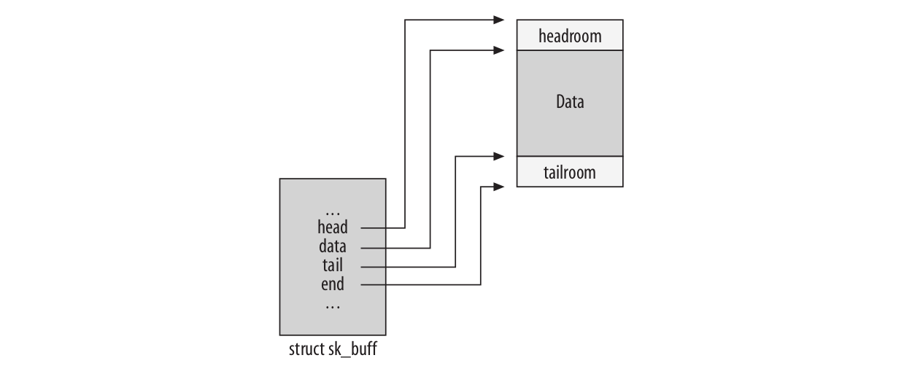
Figure 2: head/end和data/tail之间的对比
网络协议栈上的某层可以将它自己的协议header填到head与data之间. 而在tail和end之间还可以填充尾部信息.
void (*destructor)(…)
当一个buffer被移除时, 这个成员所指的函数会执行某些动作. 当buffer不属于一个套节字时, destructor通常不会被初始化. 当buffer属于某个套接字时, 这个成员通常会被初始化为sock_rfree 或sock_wfree(分别由skb_set_owner_r或skb_set_owner_w初始化).
1.3 通用字段
下面介绍一些sk_buff主要的域，这些域不和内核特定的feature关联。
tsamp
包到达或离开的时间。
struct net_device *dev
表示一个网络设备，后面还会详细介绍。dev结构体充当的角色作用，依赖于存在buffer里的数据是要被传送的还是刚到达的。
当包是到达的时候，设备驱动会更新这个域，以一个指向代表接受包的网卡设备。
当包准备被发送出去时，dev就表示发送包的设备。
某些网络功能，允许多个设备聚合在一起成为一个虚拟的设备，这个虚拟的设备不直接和具体的硬件关联起来。当设备驱动被调用时，dev成员指向虚拟设备的net_device结构体。驱动程序会从这组硬件设备相关的dev结构体中选择一个dev。换言之，指向传输设备的指针在包处理的过程中可能会改变。
char cb[40]
控制buffer，或者用来存储私有信息，由每一层维护，自己内部使用。在sk_buff里静态分配。在各层的代码里，访问这个成员通过宏来做，这使得代码可读性更好。比如对TCP来说，就用来存储tcp_skb_cb结构体。
struct tcp_skb_cb { ... __u32 seq; /* Starting sequence number */ __u32 end_seq; /* SEQ + FIN + SYN + datalen */ union { /* Note : tcp_tw_isn is used in input path only * (isn chosen by tcp_timewait_state_process()) * * tcp_gso_segs/size are used in write queue only, * cf tcp_skb_pcount()/tcp_skb_mss() */ __u32 tcp_tw_isn; struct { u16 tcp_gso_segs; u16 tcp_gso_size; }; }; } ...
下面这个宏被用来访问这个结构体，这个宏其实就是简单的指针转换：
#define TCP_SKB_CB(__skb) ((struct tcp_skb_cb *)&((__skb)->cb[0]))
- unsigned int csum
unsigned char ip_summed
校验和以及关联的状态标志。
unsigned char cloned
一个boolean标志，当设置时，表示这个结构体是另一个结构体的拷贝。
unsigned char pkt_type
基于L2层的目的地址而划分帧的类型。对于以太网设备来说，这个参数由函数eth_type_trans设置，后面还会介绍。
主要可能的值包括：
PACKET_HOST
收到的帧的目的地址就是接收接口，换句话说，包已经到达了目的地址。
PACKET_MULTICAST
收到的帧的目的地址是一个注册的多播地址。
PACKET_BROADCAST
收到帧的目的地址是一个广播地址。
PACKET_OTHERHOST
收到帧的目的地址不属于接收的这个卡。这时，如果forward（转发）打开了的话，就转发，否则丢弃。
PACKET_LOOPBACK
包是发送到回环（loopback）设备上。由于这个flag，当处理回环设备的包时，相比真实的设备内核会跳过一些操作。
PACKET_FASTROUTE
包通过fastroute功能进行路由，fastroute在2.6以后内核被支持。
__u32 priority
这个成员表示了一个要被传送或转发包的QoS等级（Quality of Service）。如果包是在本地机器生成的，由socket层来定义priority值。而如果是转发的包，rt_tos2priority会根据IP头里的ToS（Type of Service）来填这个priority，是由ip_forward调用rt_tos2priority完成的。
__be16 protocol;
表示了在设备驱动层（L2）看到的上一层，典型的值有：
#define ETH_P_IP 0x0800 /* Internet Protocol packet */ #define ETH_P_IPV6 0x86DD /* IPv6 over bluebook */
每种协议都有它自己的处理接受包的函数，该字段由驱动使用用来通知上层使用哪个函数句柄。每个驱动都会调用netif_rx来调用上层的句柄。
1.4 功能相关的域
Linux是模块化的，可以允许什么被包括进内核，什么不被包括进内核。因此仅当内核被编译为支持某些功能的时候才会将sk_buff里某些成员包括进内核。比如对于Netfiler或QoS来说就是这样。
1.5 管理函数
内核提供了很多简短的函数用来操纵sk_buff里的元素或者是操作sk_buff列表。在下图的帮助下，本节会介绍几个这样的函数：
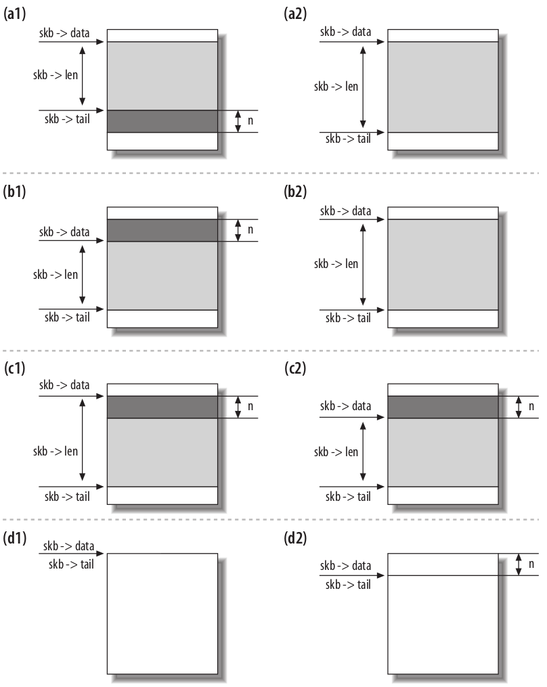
Figure 3: skb操纵函数操作前后，(a): skb_put，(b): skb_push，（c）：skb_pull，(d): skb_reserve
首先会介绍到的是分配与释放buffer，随后是操作skb->data的指针用来在一个帧的head或tail处预留空间。
在内核里经常会看到两个版本的函数，它们的名字像这样：do_something或__do_something。通常前一个函数是第二个的包装函数，它会做一些检查或锁相关的事情。通常内部的__do_something函数不会被直接调用，除非特定的条件满足的话。
1.5.1 分配内存：alloc_skb以及dev_alloc_skb
alloc_skb实现了分配buffer，定义在skbuff.c里。前述已表达数据buffer（data buffer）和头（header）是两个不同的实体，这意味着创造一个buffer涉及到内存的两次分配，一次是数据buffer一次是sk_buff结构体。
alloc_skb从kmem_cache里获得sk_buff结构体，通过调用函数kmem_cache_alloc_node函数来完成获取。而data buffer是通过kmalloc来获取的，如果cache memory可用的话，kmalloc同样通过cache。代码类似于下面这样（简化过）：
struct kmem_cache *cache; struct sk_buff *skb; ... skb = kmem_cache_alloc_node(cache, gfp_mask & ~GFP_DMA, node); size = SKB_DATA_ALIGN(size); size += SKB_DATA_ALIGN(sizeof(struct skb_shared_info)); data = kmalloc_reserve(size, gfp_mask, node, &pfmemalloc);
在调用kmalloc_reserve之前，size参数使用SKB_DATA_ALIGN宏来进行对齐。在返回之前，alloc_skb会初始化sk_buff的成员，最后的效果如下图：
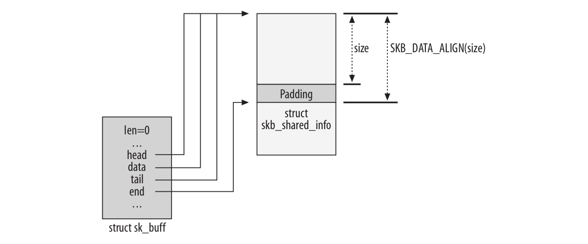
Figure 4: alloc_skb函数完成后
在上图右半部分的下部，可以看到为了对齐而添加的padding区域。而skb_shared_info主要用于处理IP分段，后面还会再介绍。
dev_alloc_skb主要是被设备驱动使用，而且可以在中断模式下使用。
1.5.2 释放内存：kfree_skb和dev_kfree_skb
这两个函数用于释放缓存，这会导致将sk_buff放回到buffer池（pool）。最后一个真正会释放sk_buff的调用是当skb->users为1时。不然该函数只是将users这个counter减1。比如如果一个buffer有三个使用者，仅当第三次调用这些释放函数时才会真正释放内存。
下面的图展示了释放一个buffer的流程。在后面的文章中可以看到sk_buff可以引用到dst_entry数据结构。当sk_buff结构体释放时，dst_release也会被调用以减少到dst_entry的引用。
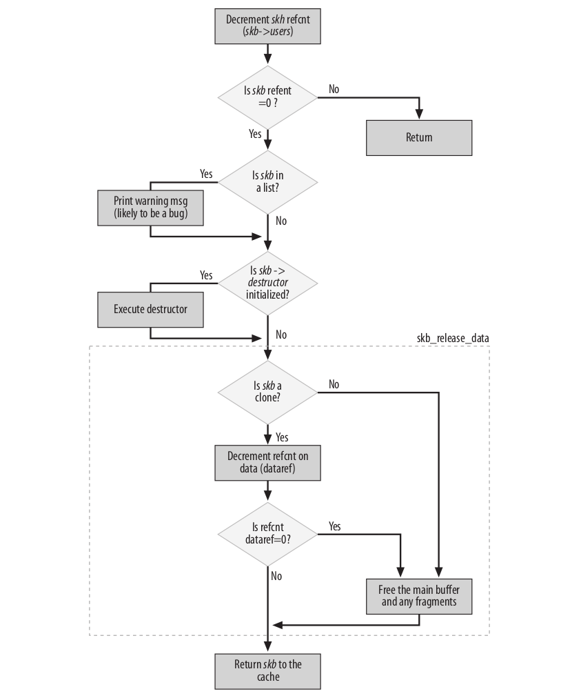
Figure 5: kfree_skb函数
当析构器（destructor）被初始化时，此时也会调用。
在前面有看到，sk_buff会关联到另一个内存数据块，这是实际存放数据的地方。然而在这个数据块的底部是skb_shared_info结构体，它可以包含指向其它内存块的指针。kfree_skb也会释放这些内存。最后sk_buff会返回给skbuff_head_cache。
1.5.3 数据预留和对齐：skb_reserve、skb_put、skb_push以及skb_pull
skb_reserve用来在buffer的头部处预留某些空间，在插入头或对齐数据边界时经常用到。这个函数会移动data和tail指针，data和tail分别确定了payload的开始和结束位置。如图 3 所示展示了调用skb_reserve后的情况。这个函数通常是在分配buffer不久后调用，这时data和tail还是一样的，此时再预留一部分头部空间，注意在没有填充payload时，data和tail依旧是指向一样的位置。
如果阅读以太网驱动代码的话（比如3c59x.c文件），在刚分配buffer而存放任何实际数据前经常可以看到下面的调用：
skb_reserve(skb, 2);
因为Ethernet frame具有14B长是已知的，上述调用会在头部处多shift出来2B，这就可以保持IP header紧邻ethernet frame之后从而对齐在16-byte字节边界处。如下图：
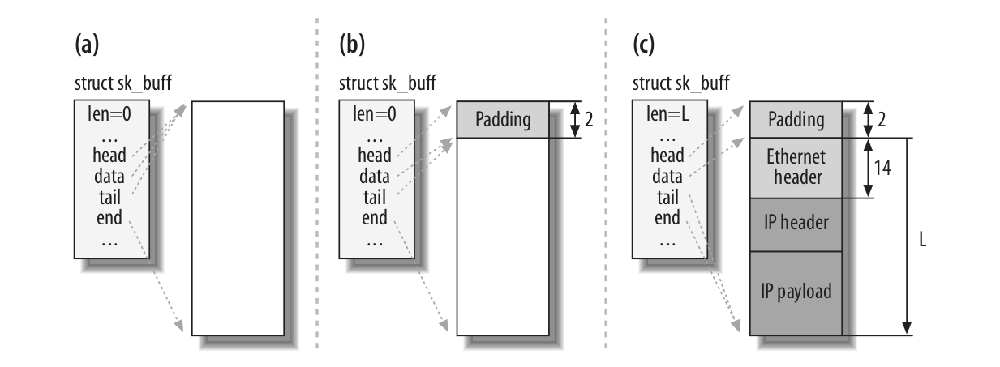
Figure 6: skb_reserve操作前后
下面的图展示了相反方向的buffer变化：也就是数据传输方向。
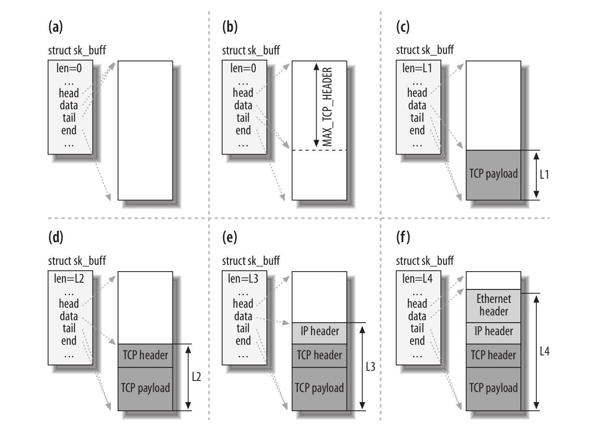
Figure 7: buffer从TCP层传到link层时是如何变化的
- 当TCP被要求去传输数据时，它会分配符合一定标准大小的buffer，比如TCP Maximum Segment Size(mss)。
- TCP使用skb_reserve函数在buffer的头部预留足够多的空间去存放各层的头（包括TCP，IP以及链路层）。MAX_TCP_HEADER是考虑了最坏情况下的所有层的所有header大小：TCP并不知道其下什么接口会用来传输数据，就预留每层可能的最大header空间，甚至会考虑多IP头的情况（当内核被编译为支持IP over IP时，就可以有多个IP header）。
- TCP层的负载被拷贝到buffer里。注意上图只是个例子，TCP负载的组织可以不同，比如它可以组织成fragment的形式。
- TCP可以添加它的header了。
- TCP现在终于把buffer传递到了下层的IP层，IP层加上了它自己的header。
- IP层又交给它的邻居下层，链路层会添加Ethernet头部。
buffer在网络栈从上到下传递时，每层的协议都将skb->data向下移动，然后拷贝它这一层的头，并且更新skb->len。这些操作通过前面介绍过的skb操作函数来完成。
注意skb_reserve并没有真正的往buffer里放入任何东西，它仅仅是更新两个指针。
static inline void skb_reserve(struct sk_buff *skb, int len) { skb->data += len; skb->tail += len; }
skb_push在buffer之起始处放置数据，而skb_put在末尾添加数据。和skb_reserve类似，这些函数也没有真的添加数据，都是简单的在head和tail处移动指针，数据的拷贝由其它函数完成。而skb_pull从Head处移除数据，当然也只是移动指针了。
如图 4 所示，在data buffer的最后，有一个skb_shared_info结构体用来存储额外的信息。下面是这个结构体的定义：
struct skb_shared_info { __u8 flags; __u8 meta_len; __u8 nr_frags; __u8 tx_flags; unsigned short gso_size; /* Warning: this field is not always filled in (UFO)! */ unsigned short gso_segs; struct sk_buff *frag_list; struct skb_shared_hwtstamps hwtstamps; unsigned int gso_type; u32 tskey; /* * Warning : all fields before dataref are cleared in __alloc_skb() */ atomic_t dataref; /* Intermediate layers must ensure that destructor_arg * remains valid until skb destructor */ void * destructor_arg; /* must be last field, see pskb_expand_head() */ skb_frag_t frags[MAX_SKB_FRAGS]; };
dataref代表了这个buffer block有多少个用户。在后面会讨论nr_frags，frag_list以及frags用来处理IP分段。skb_is_nonlinear可以用来检查buffer是否被分段。而skb_linearize*用来将多个分段组成一个单一的buffer。组合单个fragments涉及拷贝，这引入了性能延迟。
某些网卡，可以处理传统上属于CPU处理的任务，最常见的例子就是计算L3和L4层的校验和，某些网卡甚至能维护L4层的状态机。对于这里要展示的代码，仅关心TCP分段卸载，即由NIC实现了TCP层的部分功能，gso_size和gso_seqs使用了这个特点。
注意在sk_buff里没有成员是指向sk_shared_info结构体的。为了访问这个结构体，需要使用skb_shinfo宏。
比如下面的代码，展示了如何递增nr_frags++：
skb_shinfo(skb)->nr_frags++;
1.5.4 数据克隆与拷贝
当数据需要由不同的消费者独立的处理时，它们各自可能需要改变sk_buff描述符的内容，内核可以不必完全的拷贝整个sk_buff结构体和关联的data buffer。为效率考虑计，内核可以clone原来的数据结构，即只是增加引用计数（reference count）而避免过早的释放数据块。buffer克隆通过函数skb_clone来做。一个需要使用克隆的情况是进入的包需要被递送到多个接受者，比如协议句柄和更多的网络tap（后文介绍tap）。
克隆出来的buffer没有链接到任何list上，也没有属于任何socket。在克隆出来和原来的buffer里， skb->cloned成员都被设置成1。下图展示了一个clone出来的buffer：
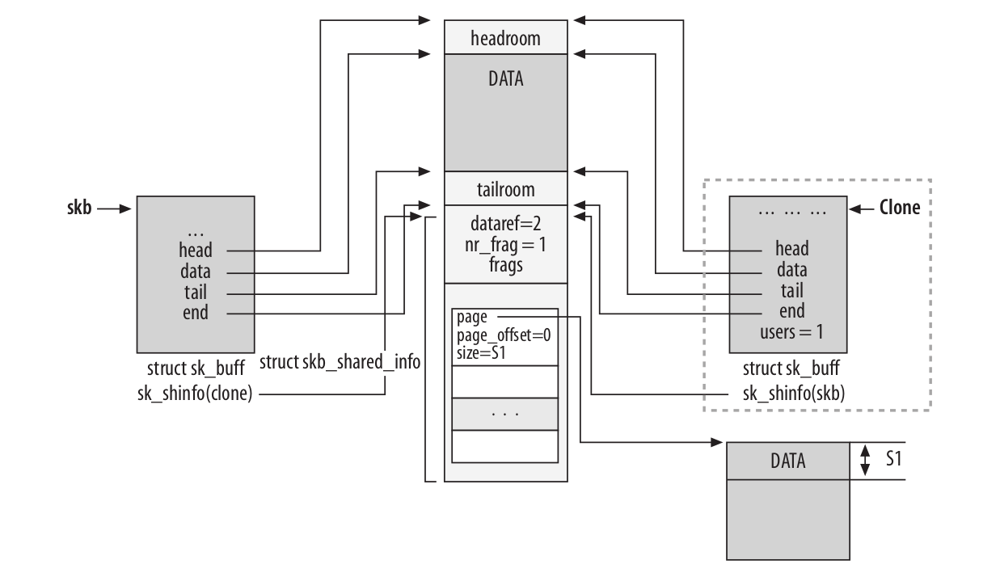
Figure 8: skb_clone函数的效果
可以看到上图表示了一个分段的buffer，但是现在不需要关心这个细节。
当一个buffer被clone时，数据块的内容是不能更改的。这就是说代码可以访问数据而不需要锁机制。当函数不仅需要修改sk_buff而且需要修改buffer数据时，这就需要也clone数据块。当程序员知道仅需要修改skb->start和skb->end之间的内容时，可以使用pskb_copy函数。当他认为还可能修改分段的数据块时，就要用skb_copy函数了。这两个函数的操作结果如下图：
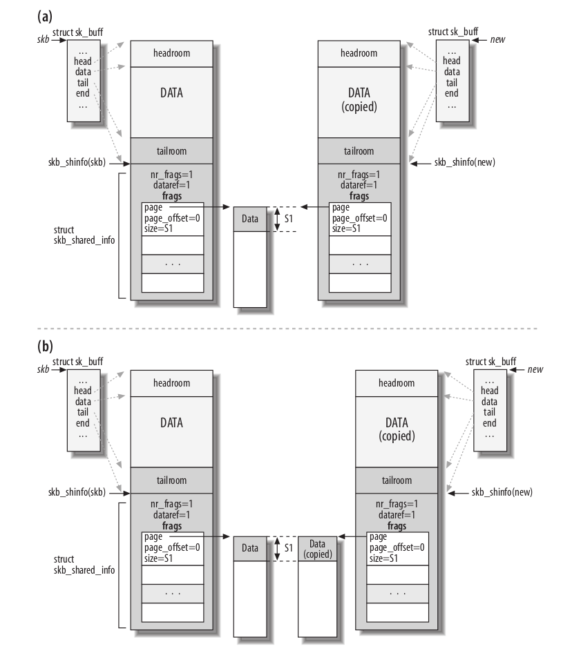
Figure 9: (a)pskb_copy和skb_copy函数
现在这个图里的一些细节可能还不能理解，但是后面会介绍更多．
1.5.5 list管理函数
下面介绍一些操作sk_buff列表的函数，列表也叫队列．完全的列表操作函数可以在<include/linux/skbuff.h>和<net/core/sbbuff.c>里看到．这里介绍一些常用的：
skb_queue_head_init
初始化一个sk_buff_head类型，里面没有元素．
skb_queue_head，skb_queue_tail
添加一个buffer到一个队列的头或尾．
skb_dequeue，skb_dequeue_tail
从一个队列的头或尾出队一个元素．
skb_queue_purge
清空一个队列.
skb_queue_walk
依次遍历队列里的元素．
所有这些函数都必须以原子的形式执行，也就是说在执行这些函数前必须先获得sk_buff_head里的spin lock．否则的话这些函数可能会被异步入队或出队事件中断，比如到期的定时器就可能会调用．这可能会导致竞态（race condition）．
也就是说，这些函数的实现形式如下：
static inline function_name (param) { unsigned long flags; spin_lock_irqsave(...); __function_name(param); spin_unlock_irqrestore(...); }
这些函数包装了一个获得锁的函数．
2 net_device结构体
net_device结构体存储了关于网卡设备的所有信息．对于每个设备就有一个这样的结构体，对于真实和虚拟的设备来说都是如此，所谓虚拟设备，比如bonding和vlan．bonding在Cisco的术语叫EtherChannel，在Sun的术语叫trunking，允许几个接口聚合起来成为一个接口，当在高速带宽上支持点对点连接时，这个特点就很重要了．这样bonding后，虚拟接口的吞吐量几乎就是单个接口的加和．而vlan通过一个额外的tag可以做到使用相同的L2层而隔绝流量．本节将交替使用接口和设备这两个词语．
网络设备可以归类为不同的类型，比如Ethernet卡或者Token Ring卡．对于同类的设备，net_device的某些成员设置为相同的值，而有些值又必须设置的不一样．因此对于每种类型，Linux提供一个函数可以可以初始化其值．设备驱动会调用这个函数，当然设备驱动也可以覆盖由内核初始化好的值（比如为了性能），后面会有更多的细节．
net_device结构体可以划分为以下类别：
- 配置
- 统计
- 设备状态
- 列表管理
- 流量管理
- 特点相关
- 通用
- 函数指针（或者VFT）
2.1 标识符
net_device结构体包含几个标识符，不应该混淆它们：
int ifindex
唯一标识ID，当设备在注册时通过调用dev_new_index来获得．
unsigned short dev_id
用来区分相同的链路地址的设备．
2.2 配置
依据网络设备的类型，某些配置值由内核给出默认值，而某些字段留给驱动来填充．当然驱动可以改变默认的值，甚至某些字段还可以在运行时修改，比如通过命令ifconfig和ip命令．实际上在针对设备的模块加载时，有几个参数比如base_addr，if_port，dma以及irq等可以通过用户设定．并且这些参数不由虚拟设备所使用．
- char name[IFNAMSIZ] 设备的名字，比如eh0．
unsigned long mem_start
unsigned long mem_end一块共享内存，设备用来和内核沟通．是由设备驱动进行初始化并且访问．高层通常不关心．
unsigned long base_addr
起始I/O地址．
int irq
设备用来和内核交流的中断号码．可以由多个设备共享，驱动使用request_irq来分配这个变量，使用free_irq来释放．
unsigned char if_port
用于这个接口的端口类型．
unsigned char dma
设备使用的DMA通道（如果有的话）．使用函数request_dma和free_dma来获得或请求DMA通道，它们定义在kernel/dma.c里．而使用enable_dma和disable_dma来使能或禁止DMA通道，这两个函数是定义在各架构里的．主要是用于ISA设备．PCI设备不需要．
unsigned short flags
unsigned short gflags
unsigned short priv_flagsflag域中的某些bit代表了网络设备具有的能力，比方说IFF_MULTICAST，而另一些代表了状态改变，比如IFF_UP或者IFF_RUNNING．设备驱动在初始化阶段设置能力标志位，而状态标志由内核管理以响应外部事件，这些标志可以通过ifconfig命令来查看：
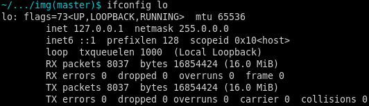
Figure 10: ifconfig的标志
在上面这个例子里，UP，LOOPBACK以及RUNNING分别对应IFF_UP，IFF_LOOPBACK以及IFF_RUNNING标志．
priv_flags存放的是不被上层用户软件可见的标志．比如被VLAN和Bridge虚拟设备使用．gflags的存在主要是为了兼容目的．标志可以通过dev_change_flags函数改变．
u64 features
以bitmap的形式存储的设备具有的其它能力．这个变量和前面的flag标志并不冗余，features可以显示网卡和CPU沟通时具有哪些能力．比如网卡是否可以在高端内存做DMA，又或者能否在硬件层面做校验和．
unsigned int mtu
MTU代表就是Maximum Transmission Unit，代表了设备能处理的最大frame大小．下面的表列出了常见网络技术的MTU：
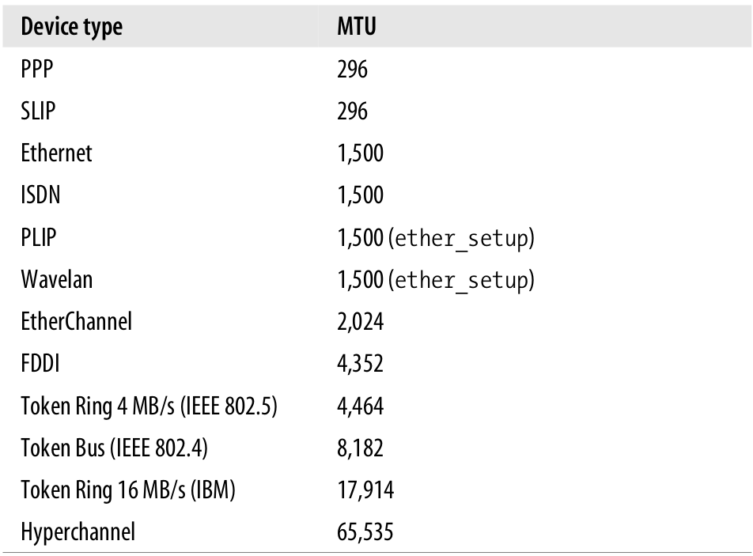
Figure 11: 不同设备类型的MTU
对于Ethernet类型的MTU需要多说两点，Ethernet frame标准定义了最大的payload为1500字节．有些时候又会发现1518或1514的大小值，1518是包括了以太网的头，而后者包括头却没有包括帧校验序列（校验和长4字节）．
unsigned short type
设备的类别，比如是属于Ethernet，Frame Relay等．
unsigned short hard_header_len
设备头的长度．比如Ethernet头的长度是14字节，定义为ETH_HLEN．
unsigned char broadcast[MAX_ADDR_LEN]
链路层的广播地址．
unsigned char dev_addr[MAX_ADDR_LEN]
unsigned char addr_lendev_addr是设备的链路层地址，地址长度由addr_len给出．
int promiscuity
混杂模式，后文介绍．
2.2.1 接口类型以及端口
某些设备不止一个连接端口，并且允许用户根据需要去选择某个端口．if_port参数就是用来设置端口类型的．下面的代码片段展示了如何根据配置来设置相应的端口：
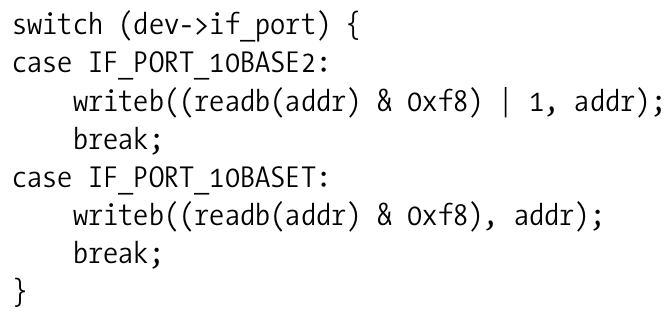
Figure 12: 设置端口
2.2.2 混杂模式
某些管理任务要求系统可以接受所有经过共享介质上的数据，而不仅是单播到自己的数据，一个能接收所有包的设备被叫做混杂模式．举个例子，需要检测应用的性能或者检查安全违规是否发生等．在桥接代码（后面会介绍）中也会用到．当然，恶意探测软件也可以利用这个特点，因为这个原因，在局域网内的数据如果不加密都是不安全的．
在net_device里有一个计数器叫做promiscuity，可以用来表征设备是否处于混杂模式．选择一个计数器而不是一个简单的比特标志是因为可能有不止一个客户端处于该模式，因此有客户端进入混杂模式时就增加该计数器，有离开混杂模式就递减该计数器．而设备本身不会离开混杂模式，直到该计数器到达0．可以通过dev_set_promiscuity来操该计数器．
如果promiscuity不为0的话，那么flags的IFF_PROMISC也会置上．
下面从drivers/net/3c59x.c里摘取的代码，演示了基于flags里bit位如何设置而配置接收模式：
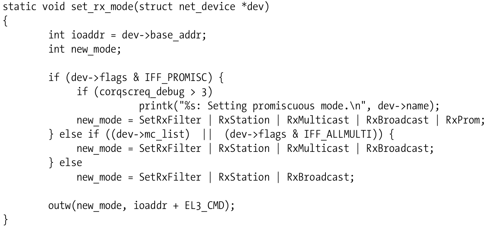
Figure 13: 配置接收模式
如果flag里的IFF_PROMISC比特被设置的话，new_mode变量就被初始化为可以接收到本卡（RxStation），多播(RxMulticast)，广播(RxBroadcast)以及所有其它的流量(RxProm)．EL3_CMD是一个相对于ioaddr的偏移，表示把命令写往何处，以达到和设备交互的目的．
2.3 统计
最新的内核代码已经没有priv成员了，不过ml_priv应该可以达到一样的记录统计，它是一个void类型的指针．
2.4 设备状态
为了控制和NIC卡的交互，每个设备驱动都必须维护一些设备的信息，这些信息包括接口在什么时间要求了什么种类的行为以及对应的状态等．而对于SMP系统来说，内核还必须确保对于相同设备的并发访问可以被正确处理．下面介绍几个在net_device中出现的这样的成员：
unsigned long state
由网络排队子系统使用的一些标志．这些标志可以通过netdev_state_t枚举类型里的常量进行索引，比如__LINK_STATE_START枚举常量．对于单个比特的清除或设置，可以通过通用的接口比如set_bit和clear_bit，但通常都有一个包装函数以隐藏使用比特的细节．比如调用netif_stop_queue可以停止设备队列．而流量控制子系统后面还会介绍
enum {…} reg_state
设备的注册状态，后面会介绍．
- void *atalk_ptr
struct in_device __rcu *ip_ptr
struct dn_dev __rcu *dn_ptr
struct inet6_dev __rcu *ip6_ptr;
void *ax25_ptr;
这些成员都是特定于协议相关的，其内容都是供给协议私有使用的．
2.5 链路层多播
多播是一种机制用来发送数据到多个接收者．多播可以在L3网络层以及L2链路层提供，本节关心后者．
链路层的多播可以通过两种方式来实现，一是使用特定的地址，二是链路层头里的信息．
flags变量里有一位用于表示是否应该在多播地址上监听数据，而何时清除和设置这一位却是由allmulti成员决定．
2.6 流量管理
Linux的流量控制现在net_device结构体里是另一个结构体netdev_queue，在这里表示流量控制的一些信息．
2.7 通用
本小节介绍一些公共的成员．
- refcount_t dev_refcnt 除非这个数字变为0，否则设备是不能注销的．
- int watchdog_timeo
struct timer_list watchdog_timer
主要是实现watchdog定时器．
2.8 函数指针
主要的函数指针包括以下类型：
- 传送和接收帧．
- 添加或者是解析链路层的头．
- 改变配置．
- 获取统计信息．
- 设置特定的功能．
ethtool_ops里面包括了主要的函数指针．